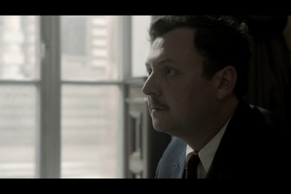

Meine Filme

Darsteller John Wark
Alle Darsteller
Nr.
Titel
Jahr
FSK
Minuten
Auflösung
IMDB
Meta
Genre
7159
10 Gebote, Die
2006
175
1080p
5.4 / 10
0
Action
5192
Breaking the Waves
1996
12
159
1080p
7.9 / 10
0
Drama
4064
Königin der Wüste
2015
0
128
1080p
5.6 / 10
0
Biographie
7754
Oxford Murders
2008
16
625
1080p
6.1 / 10
0
Thriller
5831
Stan Lee's Lucky Man
2016
43
720p
7.2 / 10
0
Action